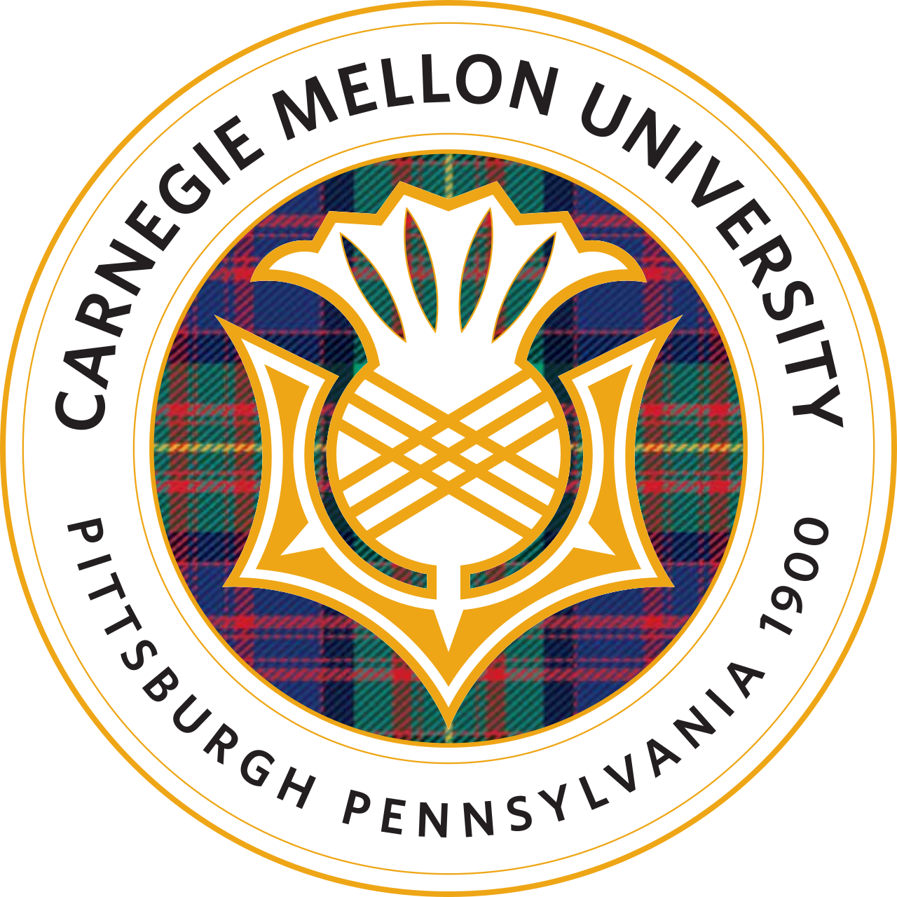
Graduate Coursework · CMU 16-720Computer vision projects.
Six projects from the graduate Computer Vision course (16-720) at Carnegie Mellon: scene classification, augmented reality, optical-flow tracking, two-view 3D reconstruction, neural networks for character recognition, and photometric stereo.
1. Spatial pyramid matching for scene classification
Given an image, the program determines the scene where it was taken. The image representation is built on a bag-of-visual-words approach, using spatial pyramid matching to capture both global and local spatial structure when classifying the scene category. An overview of the process used to build the classifier is shown below.
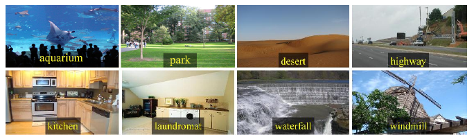
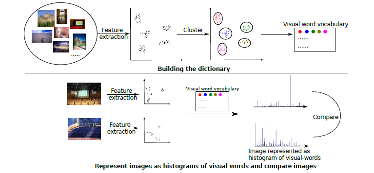
2. Augmented reality with planar homographies
An augmented-reality application built on planar homographies. After finding point correspondences between two images with a BRIEF descriptor, I estimated a homography between them and used it to warp and overlay content. To test it, I computed a homography between a textbook cover and the textbook sitting on a table, then warped a Harry Potter cover and overlaid it onto the textbook.
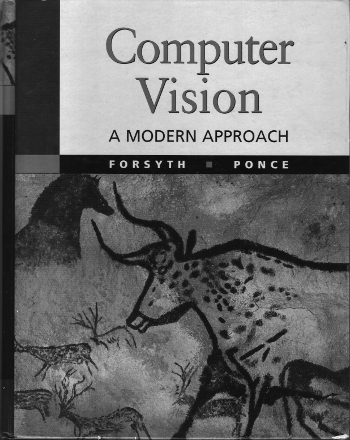

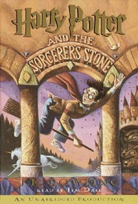
The BRIEF descriptor supplied the corresponding matching points used to compute the homography. The cover was then warped and overlaid onto the textbook image to produce the result below.
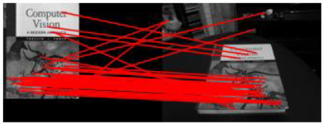
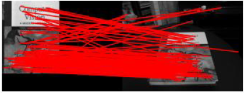
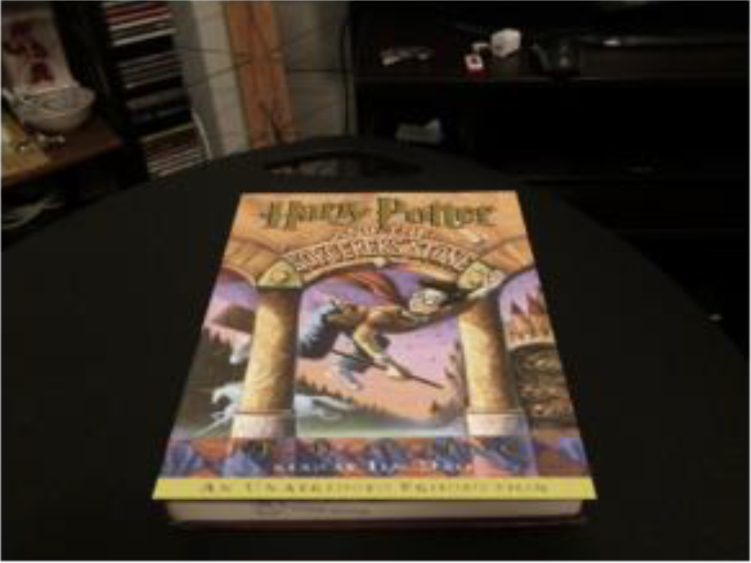
With the homographies working well, I extended it to a full AR application, overlaying a video onto the book by computing a homography frame by frame.
3. Lucas-Kanade tracking
I implemented the Lucas-Kanade method, a widely used approach for tracking by estimating optical flow. The first tracker follows a moving template in the scene, implemented as 2D tracking with a pure-translation warp and correction for the template-drift problem. The second estimates the dominant affine motion across a sequence of images and then identifies the pixels that correspond to moving objects, tested on aerial footage of moving ants and of vehicles seen from a non-stationary camera. Finally, I added the inverse-compositional extension of Lucas-Kanade to make the tracking more efficient.
4. Two-view 3D reconstruction
The goal is a 3D reconstruction of an object from two different images. After finding corresponding points, I estimated the fundamental matrix with the eight-point algorithm, then combined it with the calibrated camera intrinsics to compute the essential matrix, and triangulated the 2D correspondences into a 3D metric reconstruction. I then added automatic point matching using the epipolar constraint and visualized the result as a point cloud. In the figure below, points selected on the left image lie on the corresponding epipolar lines on the right.
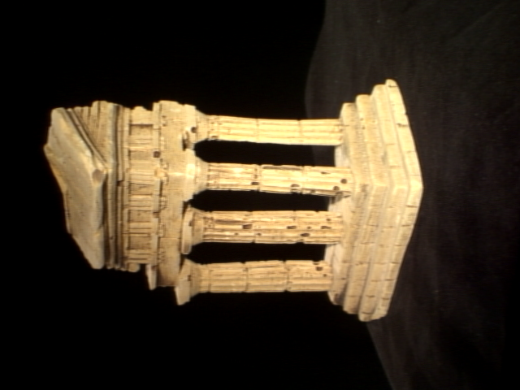
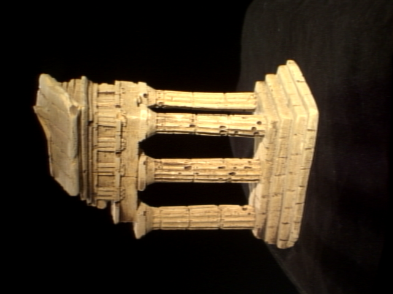
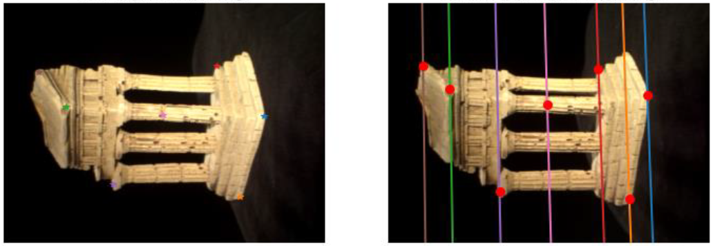
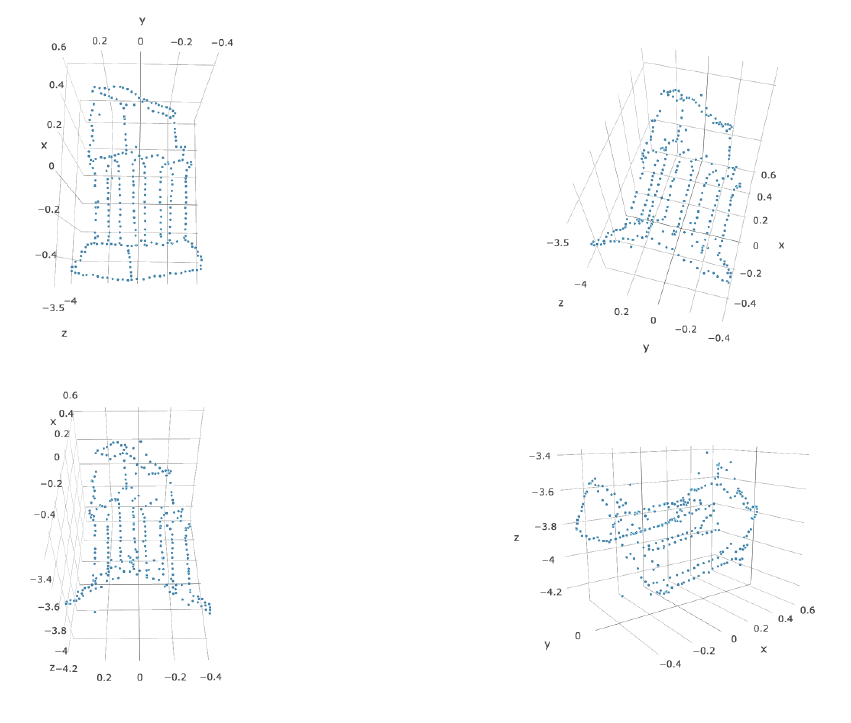
5. Neural networks for character recognition
A fully connected neural network that recognizes handwritten letters, trained on the NIST36 dataset to about 76% test accuracy. Given an image of text, the first step extracts each character by drawing a bounding box around it.
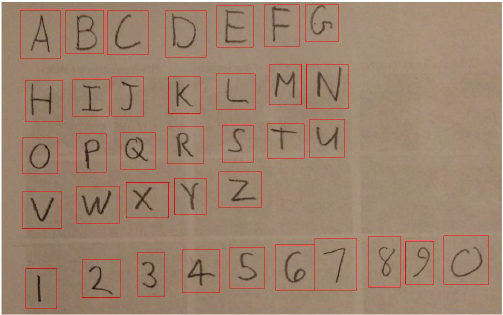
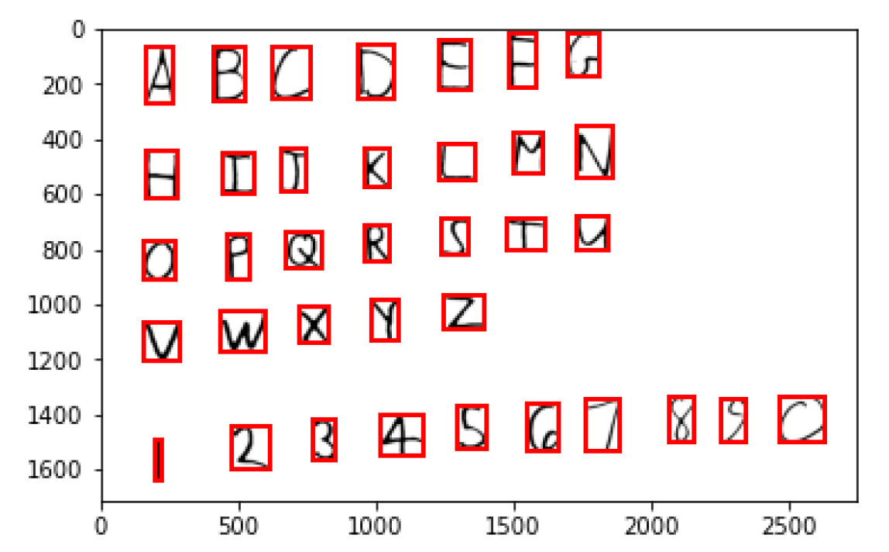
The pipeline blurs, thresholds, and applies opening morphology to separate character pixels from the background, finds connected groups of character pixels and boxes each one, groups the boxes by the line of text they belong to and sorts them, then resizes each box to the network input and classifies it. The trained network output is shown below, which worked well aside from a few misclassifications, along with the training and validation accuracy.
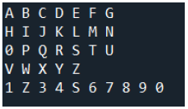
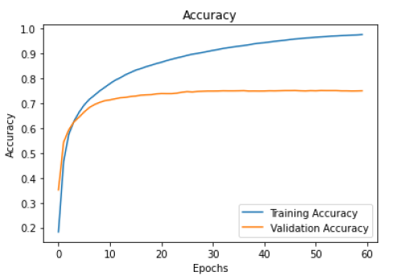
Image compression with autoencoders. An autoencoder is a network trained to approximately copy its input to its output, which is a useful way to learn compressed representations. By changing the activation function and adding momentum for speed, I got the output below, with an average PSNR (peak signal-to-noise ratio) of 15.68 across the images.
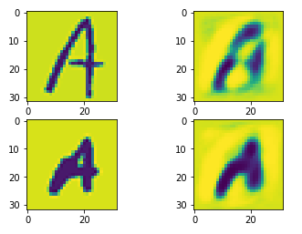
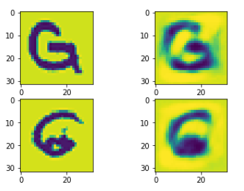
To improve on the fully connected network, I also trained a convolutional neural network in PyTorch on the same NIST36 dataset. The CNN did significantly better, reaching 90.2% validation accuracy versus the 76% of the fully connected network.
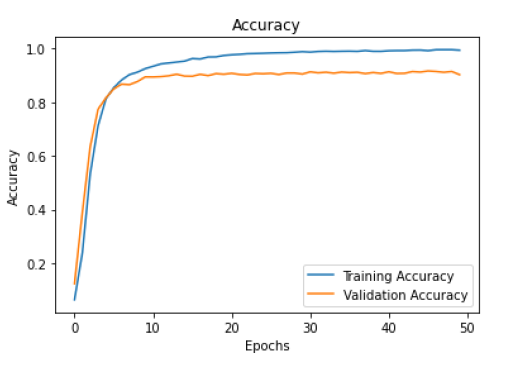
6. Photometric stereo
Photometric stereo recovers the shape of an object from its appearance under a set of lighting directions. This implementation assumes a Lambertian object imaged with an orthographic camera.
Rendering the n-dot-l lighting
For a fully reflective Lambertian sphere centered at the origin, with an orthographic camera placed away from it and three different incoming lighting directions, I simulate the sphere's appearance under the n-dot-l model.
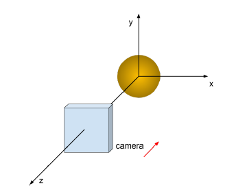
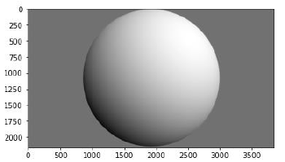
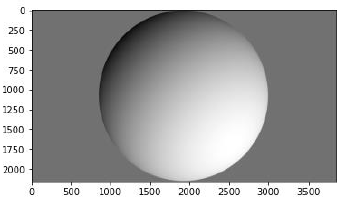
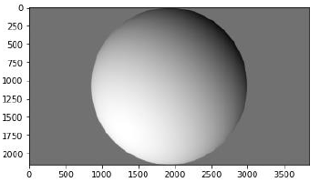
Calibrated photometric stereo
Given seven images of a face lit from different directions, with the ground-truth lighting directions, I invert the image formation model. From the images I recover the surface albedo, which indicates how much light hitting the surface is reflected rather than absorbed, and the surface normals, which encode the depth. The albedo (left) and the false-color surface normals (right) are shown below. Integrating the normals with a special case of the Frankot-Chellappa algorithm to enforce integrability then gives the depth, and the reconstructed shape of the face.
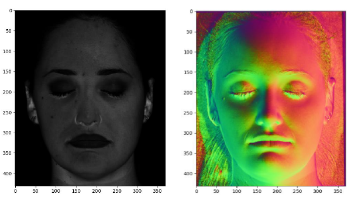
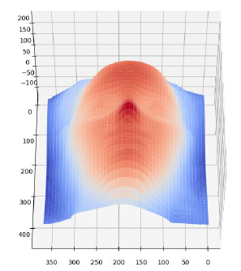
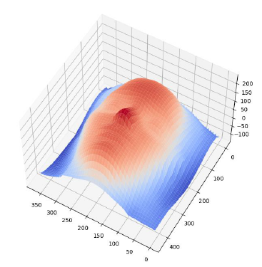
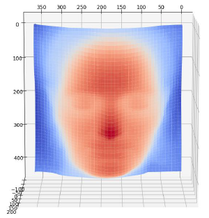
Uncalibrated photometric stereo
With no given lighting directions, I estimate the shape directly from the face images. The lighting directions are estimated by decomposing the matrix with SVD, which introduces a linear ambiguity known as the bas-relief ambiguity. Bas-relief is the old sculpting technique of flattened figures protruding from a wall that, viewed from the right angle, look full-depth. After enforcing integrability with Frankot-Chellappa, the reconstruction looks very similar to the calibrated one, but is only resolved up to a family of transformations: for any parameters greater than zero there is a set of integrable pseudonormals producing the same appearance. Examples of varying those parameters are shown below, some of which look identical to the original when viewed from a particular angle.
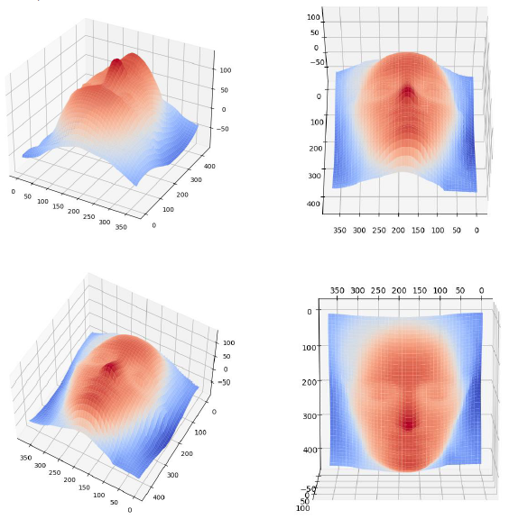
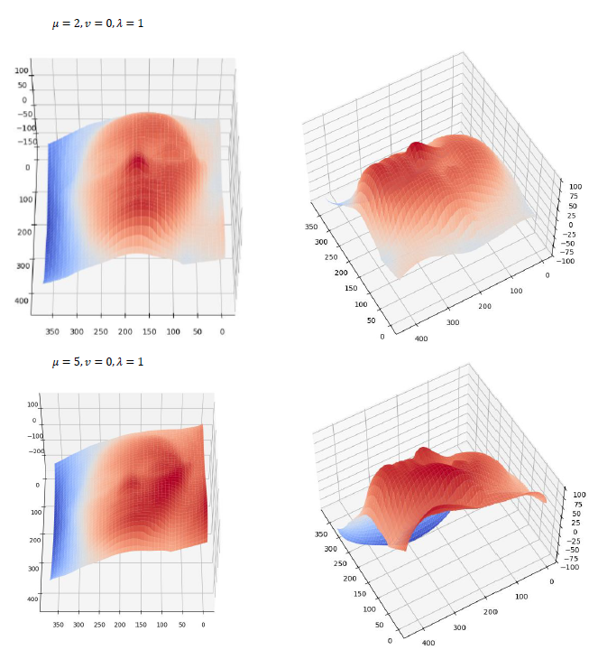
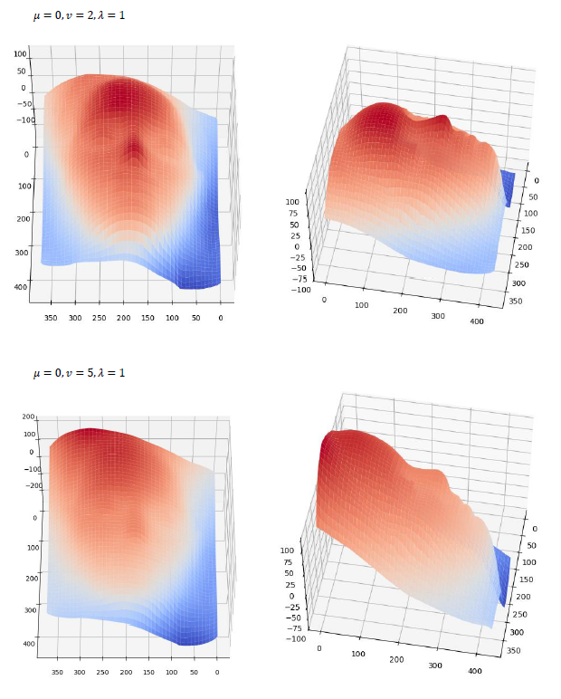